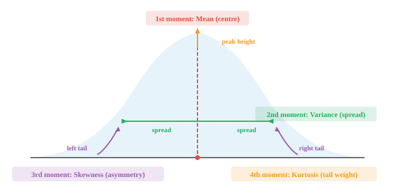
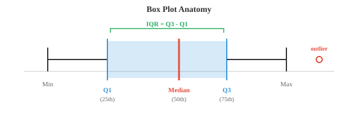
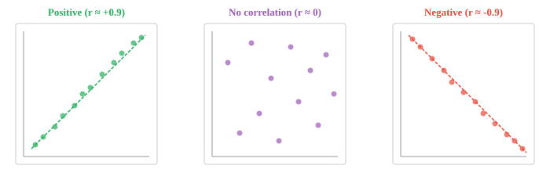
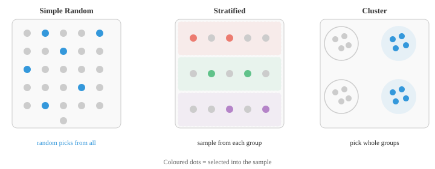
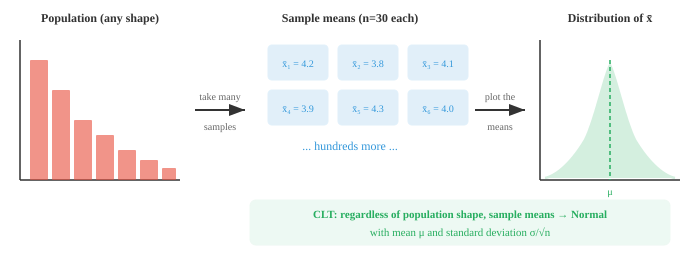
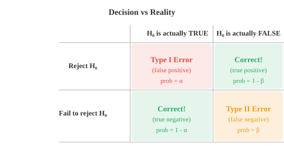

Maths, CS & AI Compendium · Chapter 04
Spread, Sample, Evidence
This is the chapter where the mechanical engineer has an unfair advantage, and almost nobody tells them. The whole apparatus of descriptive statistics — mean, variance, standard deviation, covariance — is the apparatus of section properties, renamed. You have been computing these since your first strength of materials course.
Not loosely. Exactly. The mean is a centroid. The variance is a second moment of area about that centroid. The standard deviation is a radius of gyration. And the identity \(\operatorname{Var}(X)=E[X^2]-\mu^2\), which statistics textbooks present as an algebraic convenience, is the parallel axis theorem.
The second half of the chapter — sampling, hypothesis testing, confidence intervals — maps just as cleanly onto quality control, where Type I and Type II errors already have engineering names. What does not transfer is subtler and more dangerous, and §09 is about it: a section property is an exact number, and a statistic never is.
The bridge
| What you already compute | What statistics calls it | How good is the match? |
|---|---|---|
| Centroid \(\bar{y}=\int y\,\mathrm{d}A/\!\int \mathrm{d}A\) | Mean, expected value | Identical. Same integral, same meaning. |
| Second moment of area \(\bar{I}=\int (y-\bar{y})^2\mathrm{d}A\) | Variance | Identical, normalised by total area. |
| Radius of gyration \(k=\sqrt{\bar{I}/A}\) | Standard deviation \(\sigma\) | Identical. Same idea, same formula. |
| Parallel axis theorem \(I_O=\bar{I}+Ad^2\) | \(\operatorname{Var}(X)=E[X^2]-\mu^2\) | The same theorem. See §01. |
| Product of inertia \(I_{xy}=\int xy\,\mathrm{d}A\) | Covariance | Identical. Zero on principal axes = uncorrelated. |
| RSS tolerance stack-up | Standard error \(\sigma/\sqrt{n}\) | Same \(\sqrt{n}\), same independence assumption. |
| Why stack-ups come out normal | Central Limit Theorem | This is the CLT, applied without naming it. |
| Acceptance sampling of a lot | Hypothesis test | Identical logic. |
| Producer's risk / consumer's risk | Type I error \(\alpha\) / Type II error \(\beta\) | The same two numbers. |
| OC curve of a sampling plan | Power curve \(1-\beta\) | The same curve, plotted upside down. |
| Expanded uncertainty \(U=k\,u\) | Confidence interval | Identical. Coverage factor \(k=2\) is \(z^\ast\!\approx\!1.96\). |
| A section property | A sample statistic | One is exact, the other is a guess. See §09. |
A distribution describes how values are spread out. A random variable maps outcomes to numbers so you can do arithmetic on them. For a discrete variable the probabilities are a mass function summing to one; for a continuous variable a density whose integral is one.
Hold that word — mass. It is not a metaphor. A probability distribution is a unit mass smeared along an axis, and every summary statistic you are about to meet is a property of that mass distribution, computed exactly as you would compute it for a beam cross-section.
Put the two calculations side by side and there is nothing left to explain:
The denominator on the right is 1, because probability is normalised — that is the only difference. The compendium calls the expectation the "centre of gravity of the distribution". It means that literally. A distribution balances at its mean exactly as a section balances at its centroid.
Moments then follow. The \(k\)-th raw moment is \(E[X^k]\), measured from zero; the \(k\)-th central moment is \(E[(X-\mu)^k]\), measured from the mean. In section terms: moments about the origin, and moments about the centroidal axis. The first central moment is zero in both worlds, for the same reason — deviations either side of the balance point cancel.
Every statistics course teaches this identity as a computational shortcut, with no explanation of where it comes from:
And every mechanics course teaches this, with a derivation and a diagram:
Divide the second by the total area \(A\) and set the offset \(d\) to the centroid distance. Second moment about the origin, per unit area, equals second moment about the centroid, per unit area, plus the square of the shift:
They are the same theorem. You already know why it is true, and you already know why the cross term vanishes — it is \(\int (y-\bar{y})\,\mathrm{d}A=0\), the first moment about the centroid, which is zero by definition of the centroid. §10 checks this numerically on the compendium's own dataset.

Variance is the average squared distance from the mean; we square so that deviations either side do not cancel. Standard deviation is its square root, which returns the answer to the original units.
The radius of gyration answers a specific question: at what single distance could I concentrate the entire area and still get the same second moment?
Standard deviation answers the identical question about probability mass: at what single distance could I put all the probability and still get the same variance? Same question, same formula, same answer. When a column buckles you use \(k\) because it captures how far the material sits from the axis; when data is noisy you use \(\sigma\) because it captures how far the observations sit from the mean. One concept, two vocabularies.
Drag the blocks below. Each one is a unit of area — equivalently, one data point. Everything updates live, including the parallel axis check.
Bessel's correction, and why it has no mechanical counterpart
When the data is a sample rather than the whole population, the divisor changes from \(N\) to \(N-1\):
The reason is that you measured the deviations from the sample mean, not the true mean, and the sample mean sits, by construction, exactly where it minimises that sum of squares. So the sum comes out too small, systematically. Dividing by \(N-1\) corrects the bias.
There is no equivalent in section properties, and the reason is the first thing in this chapter that genuinely differs: your cross-section is fully known. You never estimated its centroid from a sample of the material. §09 returns to this.
Position and shape
Quartiles split sorted data into four equal parts, and the interquartile range \(Q_3-Q_1\) measures the spread of the middle half while ignoring extremes. The z-score \(z=(x-\mu)/\sigma\) reports position in units of standard deviation — the same standardisation that Chapter 01 §02 argued was essential before any distance calculation.
Skewness is the standardised third moment and measures asymmetry; kurtosis is the standardised fourth and measures tail weight. Here the section analogy politely stops: bending needs the second moment, so mechanics rarely goes higher. These are genuinely new tools, not renamed old ones — and they matter, because a heavy-tailed distribution produces extreme values far more often than a normal one, which is exactly the case where a \(\pm3\sigma\) rule quietly stops being safe.

Covariance measures whether two variables move together. Pearson correlation normalises it to \([-1,1]\):
The compendium points out that this is the cosine similarity of Chapter 01 applied to the mean-centred vectors, which is true and worth holding. But there is a second reading that closes a loop opened two chapters ago.
The numerator above is \(\sum (x_i-\bar{x})(y_i-\bar{y})\). Compare the product of inertia about centroidal axes:
The same expression. So the covariance matrix of two features has exactly the structure of the inertia tensor of a cross-section: variances on the diagonal, covariances off it, where mechanics writes second moments on the diagonal and products of inertia off it.
Which means the statement "the products of inertia vanish on the principal axes" and the statement "the features are uncorrelated along the principal components" are the same sentence. Chapter 02 §07 claimed that balancing a rotor and running PCA were the same computation. This is why: PCA diagonalises a covariance matrix, and a covariance matrix is an inertia tensor.
Spearman correlation ranks the values first and then computes Pearson on the ranks, which makes it robust to outliers and sensitive to any consistently increasing relationship rather than only a straight-line one.
A product of inertia is a complete description of a rigid section. A correlation coefficient is not a complete description of a relationship. Pearson \(r\) can be exactly zero for variables that are perfectly and deterministically related — take \(y=x^2\) with \(x\) symmetric about zero, where every upward pairing is cancelled by a downward one. Zero correlation does not mean independence; it means no linear association. Always plot the scatter before trusting the number.

You cannot measure everything, so you measure a sample and reason about the population. A number describing the population is a parameter; a number computed from your sample is a statistic, used to estimate it.
The methods will be familiar from inspection practice. Simple random gives everyone an equal chance. Stratified divides into groups first and samples each — which is what you do when you deliberately draw parts from every machine rather than trusting a handful from one. Cluster selects whole groups, like inspecting entire pallets. Systematic takes every \(k\)-th item, exactly as an in-line gauge does.
Taking every \(k\)-th part is simple and usually fine, but if the production line has a hidden period that matches \(k\) — a four-spindle machine and \(k=4\), say — you will sample the same spindle every time and never see the other three. The source chapter warns that a systematic sample "can introduce bias if the list has a hidden pattern"; on a shop floor that pattern is usually a fixture, a cavity number, or a shift change.
Take a different sample and you get a different statistic. The distribution of a statistic across all possible samples is the sampling distribution, and its standard deviation has its own name, the standard error:
Quadruple the sample and you halve the error. That \(\sqrt{n}\) is the single most consequential square root in statistics, and it is the reason precision is expensive: going from \(\pm 1\) to \(\pm 0.1\) costs a hundred times the data.

Whatever shape the population has, the distribution of sample means tends to a normal distribution as \(n\) grows:
Stack \(n\) parts in a line. The worst-case method adds the tolerances, which is correct but absurdly conservative, because every part would have to be at its extreme simultaneously and in the same direction. So you use root-sum-square instead:
Two things you were taught to take on faith are theorems here. First, that formula is the variance addition rule for independent variables — variances add, standard deviations do not. Second, and less often explained: why is the assembled stack normally distributed, when the individual part distributions are skewed, bimodal or anything else? Because of the Central Limit Theorem. It is what lets you quote a \(\pm3\sigma\) figure for an assembly whose components are nothing like normal.
The theorem needs three conditions, and each has a shop-floor failure mode worth naming: independence (a common tool-wear drift correlates every part made that shift), finite variance (rarely a problem with physical dimensions), and identical distribution (two machines with different capability are two populations, not one).
Run it yourself. Pick a deliberately non-normal population, raise \(n\), and watch the means become bell-shaped while the spread narrows as \(\sigma/\sqrt{n}\).

The source chapter's worked example is a factory measuring bolts, which is no accident. Hypothesis testing was built for exactly this problem, largely by people working in industry.
The null hypothesis \(H_0\) is the default claim of no change — the process is on target. The alternative \(H_1\) is what you suspect instead. You never prove \(H_1\); you ask how surprising your data would be if \(H_0\) were true, and reject \(H_0\) when the answer is "very".
The p-value is that surprise, quantified: the probability of a result at least as extreme as the one you got, assuming \(H_0\) is true. The significance level \(\alpha\) is the threshold you commit to before looking.
At \(\alpha=0.05\) two-tailed the critical values are \(\pm1.96\), so \(z=2.0\) rejects \(H_0\), with \(p\approx0.046\). The bolts have drifted.
Every point you plot on an \(\bar{X}\) control chart is a hypothesis test. The centre line is \(H_0\), the control limits at \(\mu_0\pm3\sigma/\sqrt{n}\) are critical values, and a point outside them rejects \(H_0\) at \(\alpha\approx0.0027\). Choosing three sigma rather than two is choosing a significance level — a deliberate trade of false alarms against missed shifts. Acceptance sampling of an incoming lot is the same structure again: inspect \(n\), compare against a limit, accept or reject.
There are exactly two ways to be wrong, and both already have engineering names.
| Statistics | Quality control | Rate | |
|---|---|---|---|
| False alarm | Type I error — reject a true \(H_0\) | Producer's risk — scrap a good lot | α |
| Missed shift | Type II error — fail to reject a false \(H_0\) | Consumer's risk — ship a bad lot | β |
| Detection | Power | Probability of rejecting a bad lot | 1 − β |
| The trade curve | Power curve | Operating characteristic (OC) curve | — |
Power rises when the true effect is larger, the sample is bigger, \(\alpha\) is looser, or the process is less variable. With \(n\) fixed you cannot shrink \(\alpha\) and \(\beta\) together — tightening the control limits catches more real shifts and also cries wolf more often. The only way to improve both is more data, or less variation.
Power analysis inverts the question and asks how much data you need before you start:
To detect a 2 cm shift with \(\sigma=8\), at \(\alpha=0.05\) and 80% power: \(n=\left(\frac{(1.96+0.84)\cdot 8}{2}\right)^2\approx126\). Note the square: halving the shift you want to detect quadruples the sample. That is the same \(\sqrt{n}\) from §04, seen from the other side, and it is why detecting small process drifts is so expensive.

A point estimate alone is nearly useless; you need a range. A confidence interval is the estimate plus a margin of error:
When \(\sigma\) is unknown and estimated from the sample, \(z^\ast\) becomes \(t^\ast_{n-1}\) from the t-distribution, whose heavier tails pay for the extra uncertainty of having estimated \(\sigma\). As \(n\) grows the t-distribution converges on the normal.
A calibration certificate does not report a bare number. It reports a value plus an expanded uncertainty \(U=k\,u_c\), where \(u_c\) is the combined standard uncertainty and \(k\) is a coverage factor, conventionally \(k=2\) for roughly 95% coverage. That is a confidence interval, and \(k=2\) is \(z^\ast\approx1.96\) rounded. The GUM procedure of combining component uncertainties in quadrature is the variance addition rule from §05. Metrology and inferential statistics are the same subject with different committees.
It does not mean there is a 95% probability the true value lies in your interval. The true value is a fixed number; it is either in there or it is not. The 95% describes the procedure: if you repeated the whole exercise many times, 95% of the intervals you construct would contain the true value. Your particular interval is one draw from that process. This distinction sounds pedantic until you are asked to defend a measurement in a dispute, at which point it is the whole argument.

Where a statistic stops being a section property
beyond the chapterEverything in §§01–03 was an exact correspondence. This section is what it costs, and the root of all four items is a single sentence: a section property is a fact about a known object; a statistic is a guess about an unknown one.
When you compute \(I\) for a cross-section, the answer is exact and reproducible to as many digits as you care to carry. When you compute \(s^2\) from 30 parts, the answer is itself a random variable — measure 30 more and you get a different number. Bessel's \(N-1\) exists solely because of this, and it is the first sign that you have crossed from geometry into inference. Every downstream idea in this chapter — standard error, confidence interval, hypothesis test — is machinery for quantifying how wrong your statistic might be. Section properties need none of it.
This is the most consequential misreading in applied statistics, and engineers make it constantly. The p-value is
and not \(P(H_0\ \text{true}\mid \text{data})\). Those are different quantities and swapping them is the same error as confusing "probability the alarm sounds given a fire" with "probability there is a fire given the alarm sounds" — which depends entirely on how often fires actually happen. A \(p=0.046\) does not mean a 4.6% chance the process is fine. Getting from one to the other requires a prior, which is Bayes' theorem, which is Chapter 05.
Significance measures whether an effect is detectable, not whether it matters. Look again at the test statistic:
The denominator shrinks as \(n\) grows, so with enough samples any non-zero difference becomes significant. A bolt mean off target by one micron is highly significant at \(n=10^6\) and completely irrelevant to the assembly. Always report the effect size — the actual difference, in millimetres — alongside the p-value. In ML this is why a model that is significantly better on a benchmark may be indistinguishable in use.
At \(\alpha=0.05\), each test has a 5% false alarm rate. Run twenty independent tests on a process that is perfectly fine and the probability of at least one false alarm is \(1-0.95^{20}\approx 64\%\). Inspect enough characteristics and something will always be out of limits by luck alone. Statistics calls this the multiple comparisons problem; it is why trawling a dataset for whatever looks interesting produces findings that evaporate on retest, and why corrections such as Bonferroni exist. The discipline that protects you is the one you already apply to gauge R&R: decide what you are testing before you look.
One dataset, two readings
The compendium works four moments for \(X=\{2,4,4,4,5,5,7,9\}\). Take the same eight numbers and read them twice: once as data, once as eight unit areas placed along an axis.
Reading one — as data
Deviations \(-3,-1,-1,-1,0,0,2,4\); squares summing to 32. So
And the raw second moment, for the shortcut:
Reading two — as a section
Eight unit areas at \(y=2,4,4,4,5,5,7,9\). Total area \(A=8\).
And the second moment about the origin, with the parallel axis theorem:
| Quantity | As data | As a section | Value |
|---|---|---|---|
| Balance point | Mean \(\mu\) | Centroid \(\bar{y}\) | 5 |
| Spread about it | Variance \(\sigma^2\) | \(\bar{I}/A\) | 4 |
| In original units | Std deviation \(\sigma\) | Radius of gyration \(k\) | 2 |
| Moment about zero | \(E[X^2]\) | \(I_O/A\) | 29 |
| The shift term | \(\mu^2\) | \(d^2\) | 25 |
| The identity | \(\operatorname{Var}=E[X^2]-\mu^2\) | \(I_O=\bar{I}+Ad^2\) | 29 − 25 = 4 |
The third and fourth moments follow the same pattern and have no bending counterpart: \(\sum(x_i-\mu)^3=42\) gives skewness \((42/8)/2^3\approx0.656\), a right lean, and \(\sum(x_i-\mu)^4=356\) gives kurtosis \((356/8)/2^4\approx2.78\), slightly lighter tails than a normal distribution's 3.
Shadow reading
Q1State \(\operatorname{Var}(X)=E[X^2]-\mu^2\) as a mechanics theorem.
It is the parallel axis theorem, \(I_O=\bar{I}+Ad^2\), divided through by the total area with \(d=\mu\). Second moment about the origin equals second moment about the centroid plus the square of the shift. The cross term vanishes because the first moment about the centroid is zero — which is the definition of the centroid.
Q2What is the standard deviation, in section-property terms?
The radius of gyration, \(k=\sqrt{\bar{I}/A}\). Both answer the same question: at what single distance could you concentrate all the area (or all the probability mass) and preserve the second moment?
Q3Why divide by \(N-1\) for a sample, and why has this no mechanical counterpart?
Deviations are measured from the sample mean, which sits exactly where it minimises the sum of squares, so that sum is systematically too small. Dividing by \(N-1\) removes the bias. No counterpart exists because a cross-section is fully known — you never estimated its centroid from a sample.
Q4Connect the covariance matrix to something you have diagonalised before.
It is an inertia tensor: variances on the diagonal, covariances off it, exactly as second moments sit on the diagonal and products of inertia off it. "Products of inertia vanish on the principal axes" and "features are uncorrelated along the principal components" are the same statement, which is why PCA and rotor balancing are the same computation.
Q5Why does RSS tolerance stack-up give a normal result from non-normal parts?
The Central Limit Theorem. Summing many independent contributions drives the total toward normality whatever the individual distributions look like, which is what licenses quoting a \(\pm3\sigma\) figure for the assembly. The quadrature addition itself is the variance addition rule: variances add, standard deviations do not.
Q6Give the quality-control names for Type I and Type II errors.
Type I (\(\alpha\)) is producer's risk — scrapping a good lot, a false alarm. Type II (\(\beta\)) is consumer's risk — shipping a bad one. Power \(1-\beta\) is the probability of catching a bad lot, and the OC curve of a sampling plan is the power curve inverted.
Q7Why is an \(\bar{X}\) control chart a hypothesis test?
The centre line is \(H_0\), the limits at \(\mu_0\pm3\sigma/\sqrt{n}\) are critical values, and a point outside them rejects \(H_0\) at \(\alpha\approx0.0027\). Choosing three sigma rather than two is choosing a significance level — trading false alarms against missed shifts.
Q8A test returns \(p=0.046\). What does that number mean, and what does it not?
It is \(P(\text{data at least this extreme}\mid H_0)\). It is not the probability that \(H_0\) is true, and not the probability you are wrong. Converting between them needs a prior — that is Bayes' theorem, in Chapter 05.
Q9Why can a result be highly significant and completely unimportant?
Because \(z=(\bar{x}-\mu_0)/(\sigma/\sqrt{n})\) has \(n\) in the denominator. With enough samples any non-zero difference clears the threshold. Report the effect size — the actual difference in real units — alongside the p-value.
Q10You check twenty characteristics on a healthy process at \(\alpha=0.05\). What is the chance of at least one false alarm?
\(1-0.95^{20}\approx 64\%\). Inspect enough things and something fails by luck alone. This is the multiple comparisons problem; the protection is deciding what you will test before you look at the data.
Q11What does a 95% confidence interval actually claim?
That the procedure produces intervals containing the true value 95% of the time. The true value is fixed; your particular interval either contains it or does not. It is the same object as an expanded uncertainty \(U=k\,u_c\) on a calibration certificate, where \(k=2\) is \(z^\ast\approx1.96\).
What this chapter feeds
Chapter 05 is probability, and it inverts this chapter's direction. Here you had data and summarised it. There you will have a model and ask what data it produces — and then Bayes' theorem lets you run the arrow backwards, which is precisely what §09 said the p-value could not do on its own. The engineering home for it is reliability: MTBF, the exponential distribution, Weibull for fatigue, and the bathtub curve are all Chapter 05 material you have already met under another name.
Take any cross-section you have computed by hand — an I-beam, a tee, a channel — and recompute its centroid and \(\bar{I}\) calling them a mean and a variance. Then reverse it: take a set of measurements from a lab report and compute its "radius of gyration". Doing both once, deliberately, fixes the correspondence better than reading about it. Then run the source chapter's CLT coding task and watch a skewed population produce bell-shaped means.
Provenance and changes
This page is a derivative work. The compendium is Apache-2.0 licensed, which requires a
statement of what was changed — and independently of the licence, you should be able
to see where I followed the source and where I departed from it. Every source reference on
this page links to the original file, pinned to commit 9850ee5 so it cannot
drift.
| Section | Title | Source | Verdict | What changed |
|---|---|---|---|---|
| §00 | The bridge | — | added | Mapping table is mine. |
| §01 | Moments of a section | 01 | faithful | Distributions, random variables, expectation and moments as in source. The centroid and parallel-axis readings are added. |
| §02 | Spread and shape | 01, 02 | faithful | Variance, Bessel, quartiles, z-score, skewness, kurtosis as in source. The radius-of-gyration identity is added. |
| §03 | Correlation | 02 | expanded | Pearson, Spearman and the cosine-similarity link are the source's. The product-of-inertia reading and the \(y=x^2\) counterexample are added. |
| §04 | Sampling | 03 | faithful | All four schemes and the standard error as in source. The multi-spindle failure mode is added. |
| §05 | CLT & stack-up | 03 | faithful | Statement and the three conditions as in source. The RSS tolerance stack-up reading is added. |
| §06 | Hypothesis testing | 04 | faithful | Procedure and the bolt example are the source's, numbers unchanged. The control-chart reading is added. |
| §07 | Risk and power | 04, 05 | faithful | Errors, power and the sample-size formula as in source. Producer's and consumer's risk naming and the OC curve are added. |
| §08 | Confidence intervals | 05 | faithful | Construction and worked numbers as in source. The measurement-uncertainty link and the warning about what 95% means are added. |
| §09 | Where it breaks | — | added | Entirely mine, and flagged on the page. |
| §10 | Worked example | 01 | expanded | Uses the source's own dataset. The section-property reading is added; every value is checked in verify_claims.py. |
Companion to Chapter 04 — Statistics of the Maths, CS & AI Compendium by Henry Ndubuaku. Figures marked from the compendium are reproduced from the repository. §09 is added material and is marked as such.
Sheet 4 of 20. Built for a mechanical engineer with GATE-level mathematics and no prior CS.